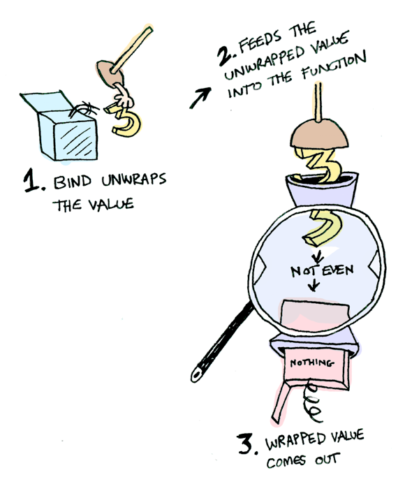
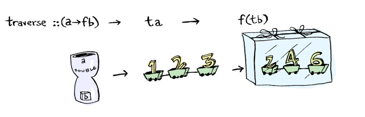

Typeclassopedia
Hamburg Haskell Meetup
24 June 2015
Moritz Drexl
Introduction
- How do I map a stateful action over a list?
- What is the difference between Applicative and Monad?
- How can I write FromJSON instances using the Applicative interface?
- ...
Today
- Functor
- Applicative
- Monad
- Traversable
Functor
Container with the ability to map a function over its elements
class Functor f where
fmap :: (a -> b) -> f a -> f b
Instances
instance Functor [] where
fmap g (x:xs) = f x : fmap g xs
fmap _ [] = []
instance Functor Maybe where
fmap g (Just x) = Just (g x)
fmap _ Nothing = Nothing
Functor

Functor
- f a represents a value in a "context"
- A functor f maps a type a to f a
- fmap lifts a function
to a functiong :: a -> bfmap g :: f a -> f b
Functor Laws
fmap id == id
fmap (g . h) == fmap g . fmap h
- A functor should not change the structure of the container.
- fmap g should only change a value, not its context.
Applicative
Function application in a context
class Functor f => Applicative f where
pure :: a -> f a
(<*>) :: f (a -> b) -> f a -> f b
Instances
instance Applicative Maybe where
pure = Just
Just g <*> Just x = Just (g x)
Just _ <*> Nothing = Nothing
Nothing <*> _ = Nothing
instance Applicative [] where
pure x = [x]
(g:gs) <*> xs = map g xs ++ (gs <*> xs)
[] <*> _ = []
Applicative

Applicative
- Allows application of function to multiple arguments inside context:
g <$> a <*> b <*> c - Idiom brackets
[| g a b c |] - Can't use value of function result as basis for next function. Need monads.
Monad
Chain effectful computations
class Applicative m => Monad m where
(>>=) :: m a -> (a -> m b) -> m b
Instances
instance Monad Maybe where
Just x >>= f = f x
Nothing >>= _ = Nothing
Monad
Monad
- Can use output of earlier computations to decide what computation to run later. More powerful in contrast to applicative.
- Alternative definition is via:
join :: m (m a) -> m a - Tree example: Tree with trees as leaves can be made a tree.
Traversable
Map effectful computations over a container
class (Functor t, Foldable t) => Traversable t where
traverse :: Applicative f => (a -> f b) -> t a -> f (t b)
-- or --
sequenceA :: Applicative f => t (f a) -> f (t a)
instance Traversable [] where
traverse m (t:ts) = (:) <$> m t <*> traverse m ts
traverse _ [] = pure []
Traversable
- An "effectful" fmap
- Also answers the question: When can we commute two functors?
End
Resources
- Haskell Wiki Typeclassopedia
- Pictures taken from Adit's Homepage